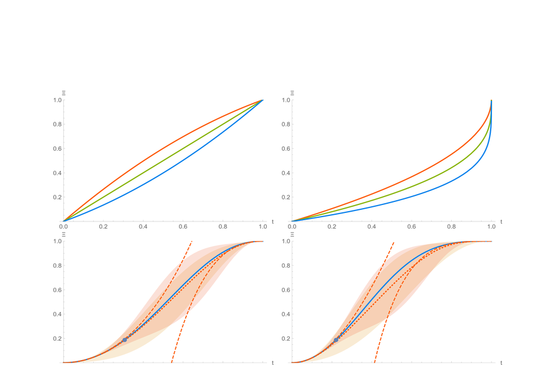

Perturbative Methods for Network Reliability Estimation
Improved the time complexity to estimate Moore-Shannon network reliability on a graph by combining Monte Carlo simulations with weak- and strong-coupling perturbative methods. Extended these techniques to heterogeneous satisfiability problems with event-specific probabilities, introducing novel lower and upper bounds on approximation error for monotonic problems.
Related: [2]

Perturbative bounds and interpolation for heterogeneous satisfiability
(polynomial & logarithmic decomposition).